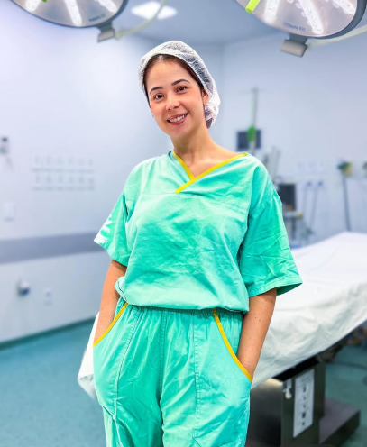
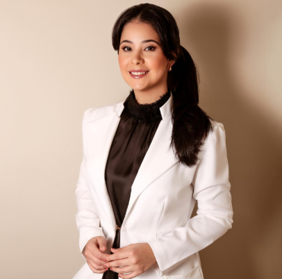

Cirurgia Bariátrica
Para pacientes com obesidade que apresentam indicação para o tratamento cirúrgico, após avaliação médica individualizada.
Avaliar se a bariátrica é indicada →Nem toda pessoa precisa do mesmo tratamento. Por isso, cada decisão é precedida por uma avaliação cuidadosa, considerando seu histórico, suas condições de saúde e suas necessidades.
Converse com nossa equipe e saiba como funciona o atendimento.


Uma cirurgia é uma decisão importante e, para muitas pessoas, pode envolver dúvidas, inseguranças e expectativas.
Por isso, o atendimento começa antes de qualquer procedimento.
Na consulta, o objetivo é compreender o momento de saúde de cada paciente, analisar seu histórico, identificar suas necessidades e explicar de forma clara quais possibilidades de tratamento podem ser consideradas.
Na Cirurgia Bariátrica, por exemplo, a indicação não deve ser baseada apenas no desejo de perder peso. É necessário avaliar o estado geral de saúde, condições associadas à obesidade, histórico clínico e outros fatores que podem influenciar a decisão.
Na Cirurgia Geral, da mesma forma, cada procedimento possui suas próprias indicações, riscos e particularidades.
O compromisso é oferecer uma medicina baseada em avaliação individualizada, informação clara e acompanhamento responsável, para que o paciente possa tomar decisões com mais segurança e consciência.
Conhecer a Dra. Marcela Souza CruzA atuação em Cirurgia Geral e Bariátrica permite avaliar diferentes condições que podem necessitar de tratamento cirúrgico.
Para pacientes com obesidade que apresentam indicação para o tratamento cirúrgico, após avaliação médica individualizada.
Avaliar se a bariátrica é indicada →Avaliação e tratamento de condições que podem necessitar de intervenção cirúrgica, considerando o diagnóstico e as particularidades de cada paciente.
Agendar avaliação →Avaliação de hérnias e definição da abordagem de tratamento de acordo com as características de cada caso.
Quero avaliar meu caso →Avaliação e tratamento cirúrgico de alterações da vesícula biliar quando existe indicação para o procedimento.
Falar com a equipe →É comum o paciente chegar ao consultório com dúvidas.
A consulta existe justamente para responder essas perguntas.
Fale com nossa equipe pelo WhatsApp.
Seu histórico e suas condições de saúde são avaliados.
Quando necessário, exames complementares são solicitados.
As possibilidades de tratamento são discutidas.
O paciente recebe orientação durante as próximas etapas.
O objetivo é indicar o que é adequado para o paciente, não simplesmente indicar uma cirurgia.
Agendar minha avaliaçãoCada paciente possui uma história diferente. Cada avaliação considera suas características e necessidades.
O paciente precisa compreender as possibilidades antes de tomar uma decisão.
O cuidado continua além do procedimento.
A cirurgia é considerada quando existe indicação médica.
Um espaço para tirar dúvidas e compreender cada etapa do tratamento.
A cirurgia exige precisão técnica, planejamento e uma avaliação criteriosa.
Olá, me chamo Marcela Souza Cruz. Sou graduada em Medicina pelo Centro Universitário de Volta Redonda (2013), com residência médica em Cirurgia Geral pelo Hospital São João Batista, em Volta Redonda/RJ (2017), e pós-graduação em Cirurgia Bariátrica e Metabólica pela Universidade do Grande Rio, no Rio de Janeiro (2018).
Sou membro cirurgião associado da Sociedade Brasileira de Cirurgia Bariátrica e Metabólica e membro da IFSO (International Federation for the Surgery of Obesity and Metabolic Disorders).
Busco estar sempre atualizada para oferecer o melhor tratamento e abordagem aos pacientes. Seja bem-vindo(a).
Agendar avaliaçãoRelatos de pacientes sobre suas experiências de cuidado e acompanhamento.
Enfim estou realizando meu sonho, com saúde, graças à ajuda dela.
Laina AlmeidaAgradeço a Deus por ter me colocado nas mãos de uma médica tão competente.
CarolInclusive com contato no pós-operatório em casa feito pela Dra.
Cris MenezesNão encontrou sua resposta? Fale com nossa equipe pelo WhatsApp.
Na primeira consulta, a médica avalia seu histórico e suas condições de saúde, esclarece suas dúvidas e explica quais possibilidades de tratamento podem ser consideradas. Quando necessário, exames complementares são solicitados.
Não. A consulta existe justamente para esclarecer se a cirurgia é ou não indicada para o seu caso.
Não. A indicação depende de critérios médicos, como estado geral de saúde, condições associadas, histórico clínico e tratamentos anteriores. Por isso, a avaliação é individualizada.
Entre elas, hérnias e alterações da vesícula biliar, além de outras condições que podem necessitar de intervenção cirúrgica, avaliadas caso a caso.
Basta clicar em qualquer botão de WhatsApp desta página e conversar com nossa equipe, que explicará como funciona o atendimento e os horários disponíveis.
Entre em contato pelo WhatsApp para consultar as condições de atendimento e a cobertura do seu plano.
Converse com nossa equipe, tire suas dúvidas e entenda como funciona o atendimento.
Agendar avaliação pelo WhatsAppConsulte nossa equipe pelo WhatsApp para confirmar horários disponíveis e agendar sua avaliação.
Rod. dos Metalúrgicos, 2490 - Sl 01
Casa de Pedra, Volta Redonda - RJ
27258-000
Consulte a equipe pelo WhatsApp para informações sobre os horários de atendimento.